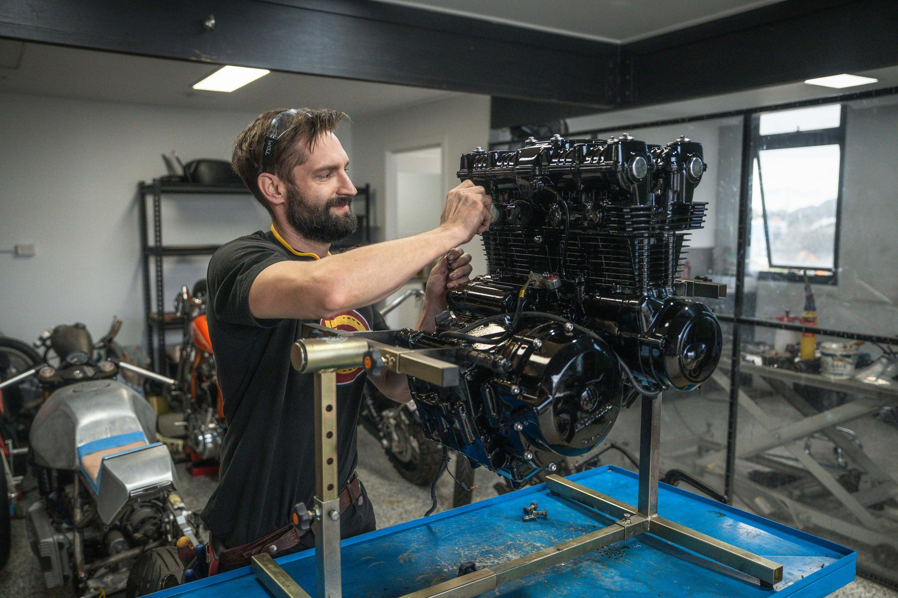
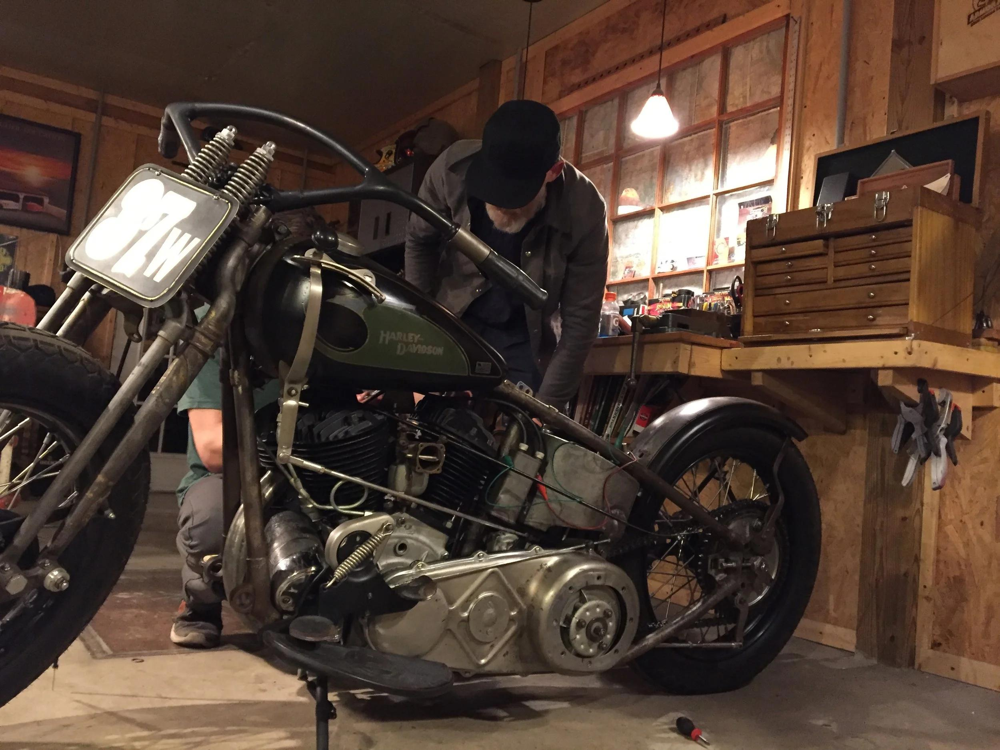
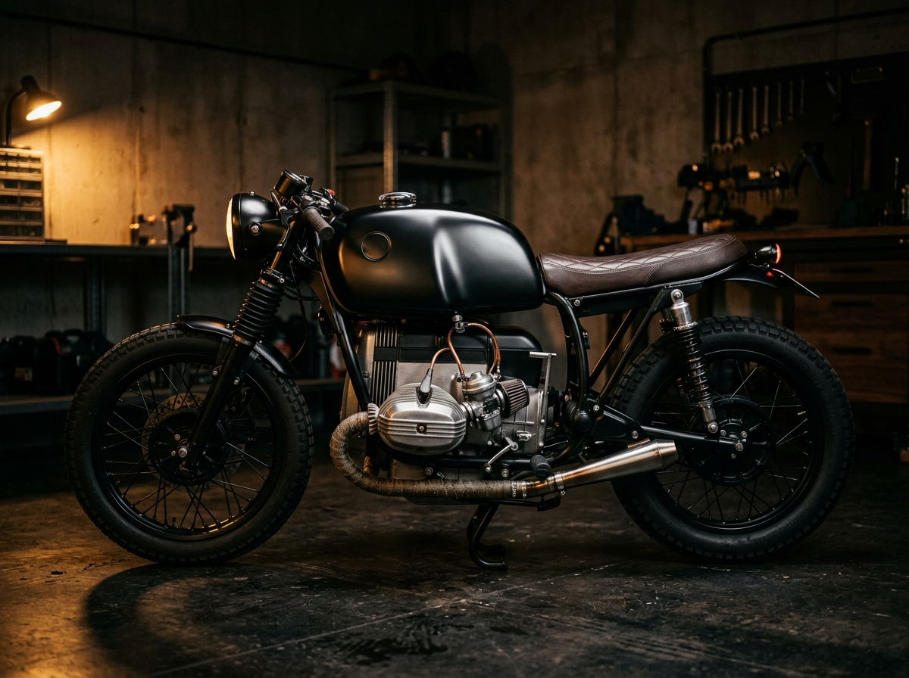
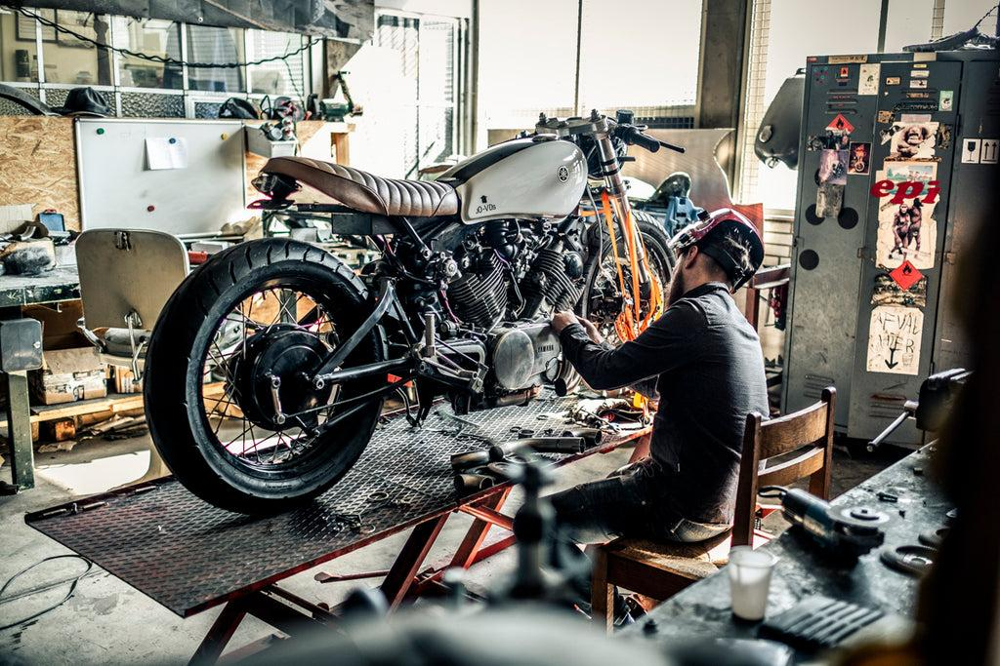
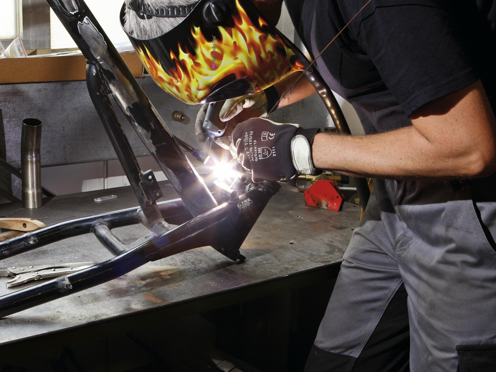
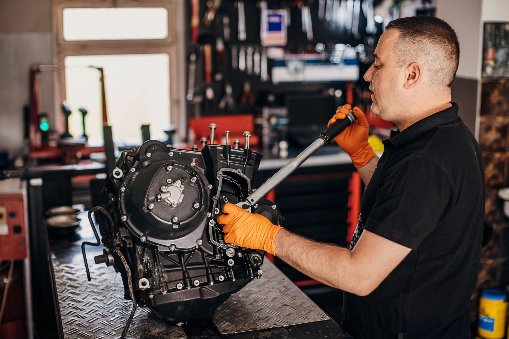

BUILT. RESTORED.
REFINED.
Mechanical craftsmanship and custom fabrication for motorcycles with character.

MOTORCYCLE RESTORATION
Returning classic, vintage, and heritage motorcycles to factory perfection or superior reliability. We approach each restoration with utmost respect for provenance, pairing period-correct aesthetics with aerospace-grade modern rebuild tolerances.
- Full frame-off teardown, non-destructive crack testing & laser alignment
- Rare OEM parts sourcing, vintage casting repairs & factory paint code matching
- Precision vapor blasting, wet blasting & zinc/cadmium hardware plating
- Complete wheel relacing with stainless spokes & period-correct rims
- Hidden electronic ignition & modern charging system integration for dependable daily riding

CUSTOM BUILDS
Ground-up bespoke machines built with unmistakable character and aggressive road dynamics. From cafe racers and street trackers to desert scramblers and minimalist bobbers, each build is engineered around your physical stance and riding spirit.
- One-of-a-kind chassis geometry, shortened tail loops & bespoke subframes
- Hand-hammered aluminum fuel tanks, seat cowls & integrated knee indents
- Performance suspension conversions (inverted radial forks & custom-valved shocks)
- Blueprinted engine tuning with tuned stainless exhaust & velocity stack intakes
- Full road-legal registration prep, dyno power verification & 250-mile road shakedowns

SERVICING & REPAIRS
Precision routine servicing, mechanical diagnostics, and deep repairs for vintage, modern-classic, and custom motorcycles. We maintain your machine at peak mechanical health with uncompromised attention to every bolt and fluid circuit.
- Comprehensive 50-point safety inspection & chassis fastener retorquing
- Multi-carburetor rebuilds, ultrasonic jet cleaning, synchronization & dyno fueling setup
- Shim-under-bucket & screw valve lash adjustment, cam chain tensioning & timing checks
- Fork rebuilding, damper cartridge servicing, seal replacement & steering head bearings
- Electrical troubleshooting, parasitic draw tracing, stator rebuilds & starter overhauls

FABRICATION & MACHINING
When off-the-shelf components compromise the vision or don't exist, we build them in-house. From bespoke TIG-welded exhaust systems to manual lathe turned spacers and hand-wheeled sheet metal bodywork.
- TIG & MIG welding across 4130 chromoly steel, 6061 billet aluminum & titanium
- Bespoke pie-cut exhaust headers, custom 2-into-1 collectors & internal baffling
- Structural frame reinforcement, custom swingarms & monoshock conversions
- English wheel and planishing hammer sheet metal shaping (fairings, side covers, fenders)
- Manual lathe and mill machining for custom wheel spacers, caliper brackets & footpegs

ENGINE REBUILDS
True mechanical reliability and soul begins inside the crankcase. We perform meticulous teardowns and blueprinted overhauls for classic parallel twins, boxer engines, air-cooled four-cylinders, and big-bore V-twins.
- Complete engine disassembly, chemical cleaning & micrometric tolerance inspection
- Crankshaft truing, dynamic balancing & connecting rod matched-weight sorting
- Precision cylinder boring, plateau diamond honing & forged piston ring end-gap fitting
- Cylinder head port blending, multi-angle valve seat cutting & new bronze guides
- Transmission gear undercut blueprinting, clutch upgrade & dyno break-in calibration

CUSTOMIZATION OPTIONS
Elevate your motorcycle's visual impact, handling capability, and cockpit ergonomics without a full frame teardown. We offer modular upgrades engineered to dramatically modernize your riding experience.
- Front-end inverted fork transplants with custom CNC-machined triple trees & stems
- Radial brake system upgrades: Brembo multi-piston calipers & floating wave rotors
- Motogadget M-Unit blue digital harness, RFID keyless ignition & micro-pushbuttons
- Handcrafted leather saddles, waterproof Alcantara tuck-and-roll upholstery
- High-power LED projector headlights, hidden integrated indicators & flush taillights
LET'S TALK ABOUT
YOUR MACHINE.
Whether you need a complete restoration or custom fabrication work.